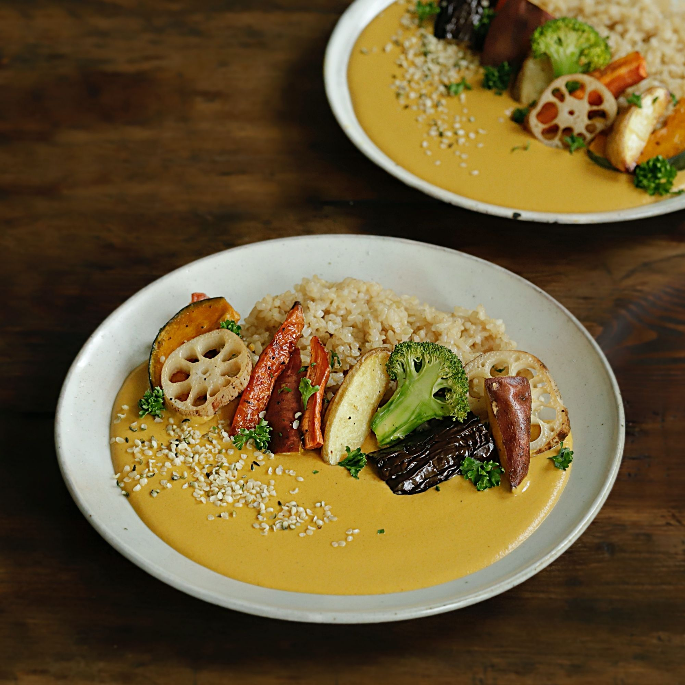

구운 채소 카레
알록달록 예쁘고 든든한 구운채소를 올려 캐수너트와 통깨를 갈아 넣어 정말 고소하고 맛있는 카레입니다.
건강에도 좋고 보기에도 좋아서 자주 해먹기 참 좋은 음식이예요.

기본 재료 : 3~4인분 기준
- 연근 5~6조각
- 단호박 2~3조각
- 브로콜리 2~3조각
- 고구마 1개
- 감자 1개
- 당근 1/3개
- 가지 1/2개
- 소금 과 후춧가루 약간
카레 재료 : 3~4인분 기준
- 불린 캐슈너트 1컵
- 통깨 2큰술
- 참기름 1큰술
- 파프리카 가루 1큰술
- 토마토 1개
- 양파 1개
- 마늘 2~3톨
- 식용유 1큰술
- 물 350ml
- 카레가루 80g
조리 과정
- 1. 연근과 단호박은 적당한 두께로 슬라이스, 감자와 당근, 고구마는 껍질째 웨지 모양으로 썰고, 가지는 반으로 썰어 3~4등분 해주세요.(tip. 채소는 기호에 맞게 변경해도 좋아요)
- 2. 오븐 팬 2개에 단단한 채소와 무른 채소를 나눠 담은 후 소금, 후춧가루, 오일을 뿌려 가볍게 버무려주세요.
- 3. 180도로 예열한 오븐에서 단단한 채소는 25분, 무른 채소는 15분 정도 구워주세요.(tip. 오븐의 성능에 따라 굽는 시간은 다를 수 있어요)
- 4. 양파는 채를 썰고 토마토는 6등분으로 잘라주세요. 마늘은 편으로 썰어주세요.
- 5. 달군 냄비에 기름을 두르고 채를 썬 양파와 마늘를 넣어 볶다가 양파가 노릇해지면 토마토를 넣고 볶아주세요.
- 6. 토마토가 익으면 물을 붓고 끓이다가 카레 가루를 넣고 약불에서 저어가며 끓여주세요.
- 7. 카레에 불린 캐슈너트과 통깨, 참기름, 파프리카 가루를 넣어 핸드믹서로 곱게 갈아주세요.(tip. 캐슈너트는 미지근한 물에 15분 정도 불려주세요)
- 8. 그릇에 밥과 카레를 담고 구운 채소를 올려 맛있게 즐겨주세요.(tip. 기호에 따라 치아시드, 햄프씨드 등을 뿌려도 좋아요)